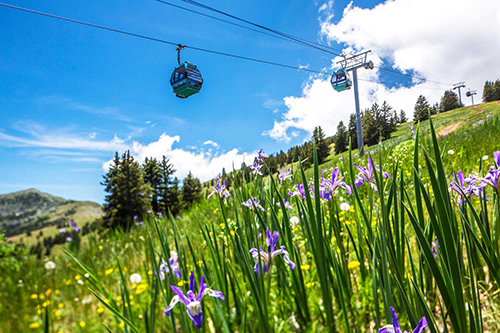

What Locals Say
Ruidoso is one of those quaint, little magical towns that make you appreciate life and the outdoors. There are plenty of outdoor activities both in summer and winter. The scenery is beautiful! The trees, mountains, and wildlife cannot be beat!
Lyla Woodsberry
About Us
Ruidoso Has Something for Everyone
Ruidoso is a small mountain village located in Lincoln County in the Sacramento Mountains of South Central New Mexico. The community of 8,000 people sits at an elevation of 6,970-feet, which makes Ruidoso the most popular tourism destination in the region.
Ruidoso is surrounded by over a million acres of forest and wilderness. The Lincoln National Forest, the White Mountain Wilderness Area and the Fort Stanton National Conservation Area offer hundreds of miles of multi-use trails and is an ideal destination for hiking, horseback riding, mountain biking and camping.

Do you have any questions?
Whether you are a first-time visitor or a long-time local, Ruidoso Tourism welcomes your input and questions.